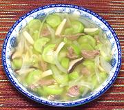

|
Pork & Luffa SoupChina - Cantonese | ||||
| Makes: Effort: Sched: DoAhead: |
4 soup ** 20 min Yes |
A light, simple and delicious soup considered by the Chinese to be medicinally correct for summer. This soup is very good reheated, but the onions will be softer. Unlike squash, luffa holds its shape. | |||
|
6 ------ 1/2 1/2 1/2 ------ 1 5 2 1-1/2 5 1/2 |
oz --- t t t --- # oz oz in c t |
Pork, lean (1) -- Marinade Oil Soy Sauce Cornstarch ------ Luffa (2) Onion Mushroom (3) Ginger Stock, light (4) Salt |
Prep - (10 min)
|